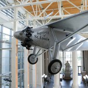

St. Louis and Space St. Louis Space Frontier
Article By Gloria Lloyd
“This is a frontier good for millions of years. The only time remotely comparable was when Columbus discovered a whole new world.” – James S. McDonnell in an interview with TIME Magazine, 1967
“Spring break in Ibiza or Miami? I’d rather be in St. Louis, with the future.” – Will.I.Am at the FIRST Robotics World Championships at the Edward Jones Dome, April 26, 2014
St. Louis first became a city of exploration when it was just a river town on the edge of a vast expanse of unknown wilderness, where Lewis and Clark set out to explore the West. So it is fitting that St. Louis has played a key role in both aviation and space history, designing, engineering and manufacturing the planes and spaceships that some of the world’s greatest explorers used to travel around the world – and out of it.
St. Louis first secured its spot in engineering history in 1867 when James Eads connected Missouri and Illinois with the world’s first steel bridge, the Eads Bridge (up to that time, steel was not used as a construction material, and no bridges had ever been built across a river as wide as the Mississippi). Skeptics told Eads such a contraption could never work. Andrew Carnegie kicked off the modern steel industry, and America’s Industrial Age, when he saw how difficult it was to get steel to St. Louis to build the bridge. Before the Arch, the Eads Bridge became an iconic symbol of St. Louis, compared to the Eiffel Tower in Paris and called the seventh wonder of the modern world. The bridge is still in use today, for cars, pedestrians andMetroLink light rail trains.
The St. Louis airport, Lambert Field, has a rich history of amazing experimental flights and of innovation – it was a key link in the first transcontinental air-rail service, the first airport with an air traffic control system and housed manufacturing facilities that produced the United States Navy’s first jet fighter – and America’s first spaceship.
Although Charles Lindbergh is undoubtedly the headliner of St. Louis aviation history, the city already had an esteemed list of record-holders even before his flight, including a long-held record for the longest hot-air balloon flight, set in 1859 by John Wise on a flight between St. Louis and Henderson, N.Y. At the 1904 World’s Fair – the biggest spectacle the world had ever seen up to that point – aeronauts dazzled spectators with the first-ever public powered flights, of airships. Theodore Roosevelt became the first president to fly here in 1911, and military installation Jefferson Barracks saw the first parachute jump from a plane in 1912.
But it was Lindbergh’s first transatlantic solo flight in 1927 – and the St. Louis spirit that got him there – that changed the course of the 20th century. When Lindbergh wanted to do what no one had done before – fly nonstop across an ocean – it was nine entrepreneurs in St. Louis, where Lindbergh lived and flew airmail flights, who funded his unlikely transatlantic dream. He honored them by naming his plane the Spirit of St. Louis, and he successfully flew between New York and Paris (after a record-setting long-distance stopover in St. Louis) in 1927.

As the headquarters of the McDonnell Aircraft Corporation from its inception in the 1930s, as well as many other aviation companies that formed in the wake of Lindbergh’s successful flight and the resulting aviation mania, St. Louis produced many legendary civilian and military aircraft – including, as one example, the 1929 Curtiss Robin used by “Wrong Way” Corrigan for his famous flight across the Atlantic, and the St. Louis Robin that set a world endurance record.
Even before the Soviet Union launched Sputnikin 1957, James S. McDonnell tasked 45 engineers in St. Louis to start working on the first manned spaceship. That foresight made St. Louis ground zero for America’s first human spaceflight program, Project Mercury, and McDonnell manufactured 20 space capsules to send the first Americans – and chimpanzees – into space, and much of the simulation and training America’s first astronauts underwent happened in St. Louis. Through the Mercury program, America sent its first man to space, Alan Shepard, and John Glenn became the first American to orbit Earth in the Friendship 7 capsule, now on display at the Smithsonian alongside the Spirit of St. Louis.
“It is essential that the United States be first, and I can imagine no action, no adventure, which is more essential and more exciting.” – President John F. Kennedy, in remarks to McDonnell employees working on America’s first spaceship following his visit to St. Louis to see the Mercury space capsule in September 1962.
“At the president’s departure, he stated that he was greatly impressed by what he saw in St. Louis.” – newscaster in historic newsreel footage, recounting Kennedy’s visit.
NASA’s follow-up program, Project Gemini, saw the second American in space, astronaut Gus Grissom, arrive in St. Louis to assist McDonnell engineers in building their next spaceship. Gemini astronauts spent time in St. Louis at McDonnell on training simulators for their missions.
In all, 10 manned Gemini capsules were made in St. Louis and launched from Cape Canaveral in 1965 and 1966 as a runup to the Apollo program, which had the lofty goal of landing Americans on the Moon by the end of the 1960s. Gemini astronauts took some of the first spacewalks, stayed in the spacecraft long enough to reach the Moon and perfected rendezvous and docking in preparation for the eventual Moon landing.
During the successes of the Gemini program and just past the heyday of Route 66 – when a generation of travelers traveled to St. Louis to “get their kicks” on the Mother Road – the Gateway Arch was erected on the downtown riverfront, serving as the city’s foremost symbol of its status as the Gateway to the West. It is America’s largest man-made monument.
Although NASA’s space shuttles were not entirely manufactured in St. Louis like their spaceship predecessors had been, St. Louis played an important role in the space shuttle program. NASA later noted that native St. Louisan and McDonnell Douglas engineer John Yardley, who helped design and develop the shuttle while at McDonnell and then headed the entire program for NASA, was “as responsible as any individual for getting the Space Shuttle program off the ground.” McDonnell Douglas also manufactured the aft propulsion pods that helped the shuttle get into orbit and turn once it reached space. As a mark of appreciation for McDonnell Douglas’s impact on the space shuttle program, NASA flew the first space shuttle, the Enterpise prototype, to St. Louis. Today, the most storied of the space shuttles, Discovery, is housed at the National Air and Space Museum’s Udvar-Hazy Center in the James S. McDonnell Hangar, a fitting nod to McDonnell’s enduring and continuing contributions to America’s space program.
Nine current or former astronauts were born in, raised or went to school in Missouri, including Eileen Collins, the first female spaceship commander. McDonnell Douglas engineer Charlie Walker was the first non-government astronaut to fly in space, during the space shuttle program. Sandra Magnus, from St. Louis suburb Belleville, Ill., flew on the final space shuttle flight in 2011. Dick Richards flew four space shuttle flights. Tom Akers flew four space shuttle flights, including the maiden flight of Endeavour, and is now a professor at nearby Missouri University of Science and Technology in Rolla, Mo. Other Missouri and Illinois native astronauts include active astronaut Bob Behnken of St. Ann, who has flown in space twice and is currently the Chief Astronaut, Janet Kavandi, who is active and has flown on three space shuttle flights, Linda Godwin and Steven Nagel, who are married and both now professors at the University of Missouri at Columbia, Scott Altman of central Illinois and Michael Hopkins, who recently returned from the International Space Station, after tweeting a picture of St. Louis from space.
Since St. Louis was at the forefront of aviation and America’s space program, it comes as no surprise that it has also played a key role in the emergence of commercial spaceflight. In 2004, at a ceremony held at the St. Louis Science Center, the St. Louis-based X-Prize Foundation awardedits $10 million Ansari X-Prize to SpaceShipOne for the first successful private spaceflight.
Today, St. Louis continues its longtime legacy of exploration as an aerospace hub, serving as the headquarters of Boeing’s $33 billion Defense, Space and Security Division, with 58,000 employees worldwide – a combined division of the company that emerged after the 1997 merger of Boeing, then based in Seattle and the world’s largest aircraft manufacturer, with St. Louis-based McDonnell Douglas, then the world’s second-largest aircraft manufacturer. The combined company now gets 45 percent of all American military contracts and designs and engineers and manufactures some of the most sophisticated aircraft ever seen.
Three military jets, the F-15 Eagle, the E-18 Growler and the F-18 Hornet, are manufactured in St. Louis, and military operations and logistics around the world are commanded from the Department of Defense’s mobility and transportation hub at Scott Air Force Base. St. Louis is also home to Boeing Phantom Works, which is Boeing’s cutting-edge, classified military technology prototyping division and manufactures cutting-edge aircraft in St. Louis under a veil of secrecy.
After the retirement of the space shuttle and completion of the International Space Station, NASA’s focus has turned to commercial spaceflight to take cargo and supplies to the astronauts that are now a permanent presence on the space station, with an eye toward moving out of low-earth orbit to land humans on an asteroid and then Mars. During this transition, St. Louis still remains at the forefront of space: Boeing engineers in St. Louis are designing and building parts of Boeing’s Crew Space Transportation-100 (CST-100) capsule that, along with SpaceX’s Dragon capsule and Sierra Nevada’s Dream Chaserspaceplane, is one of NASA’s top contenders to ferry America’s astronauts to space for the Commercial Crew Program, NASA’s new commercial spaceflight program and partnership.
Meanwhile, scientists at Washington University in St. Louis have taken the lead scientific roles in the Mars Opportunity rover mission, and many scientists right here in St. Louis are currently conducting groundbreaking scientific research on Mars in collaboration with Caltech’s Jet Propulsion Laboratory on the Mars Curiosity rover mission.
Oh, and did we mention that Apollo 13 flight director Gene Kranz (“Failure Is Not an Option”), graduated from St. Louis University’s Parks College of Engineering, Aviation and Technology? In addition to Washington University (which has had 22 Nobel Laureates) and SLU, St. Louis is a university town where many colleges and universities are currently training future stars of space and science, even before the debut of a newly-formed aerospace consortium among community colleges and universities. Every day, children take field trips and simulate missions to space at the St. Louis Challenger Learning Center. St. Louis also hosts the FIRST Robotics World Championships every year – where teams of the world’s smartest high school students work together to build robots to compete in a challenge that changes every year.
St. Louisans continue to witness aviation history – in 2013, the first solar-powered airplane, Solar Impulse, stopped in St. Louis on its first cross-country flight to follow in Lindbergh’s footsteps (watch it land at Lambert Field in a time-lapse video here). And on the silver screen, the plane-themed movie Up in the Air filmed in St. Louis.
Since St. Louis has played – and plays – such an esteemed role in America’s space program, it is fitting that one of the world’s few – if not only- space-themed hotels can be found right here on the world-famous Delmar Loop: the Moonrise Hotel, built by local developer (and space enthusiast) Joe Edwards. Appropriately for St. Louis, the Moonrise’s rooftop bar features the world’s largest man-made moon, eight feet in diameter.
Visitors to St. Louis have the opportunity to see some of the city’s space history through exhibits on display at the St. Louis Science Center and the James S. McDonnell Planetarium, one of the premier facilities in the country for space education. A Mercury and Gemini capsule manufactured in St. Louis (like all Mercury and Gemini capsules were) are on display at the Science Center and planetarium, which are connected by a skybridge over Interstate 64.
Exploration buffs can also find the replica Spirit of St. Louis used in the movie about Lindbergh’s flight hanging from the ceiling at the Missouri History Museum, also in Forest Park. At times, the History Museum has extensive Charles Lindbergh exhibits, since Lindbergh chose to donate his papers, artifacts and memorabilia from his storied career in aviation to the museum. The museum also features many St. Louis aviation artifacts and special exhibits.
The Creve Coeur Spirit of St. Louis Airport hosts a museum that displays one of the largest collections of vintage aircraft in the country. The Boeing Prologue Room is a museum of McDonnell Douglas and Boeing history that is open to the public in the summer.
The Greater St. Louis Air and Space Museumfeatures many McDonnell Douglas aircraft and is located in a historic hangar at the St. Louis Downtown Airport in Cahokia, Ill., which was a stop of almost all the notable early aviators, including Lindbergh and Amelia Earhart.
One of Lindbergh’s iconic planes – donated by Lindbergh himself – hangs in the terminal at Lambert-St. Louis International Airport.